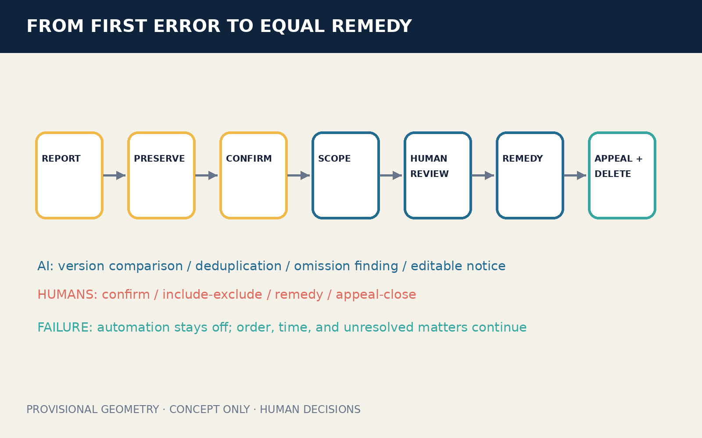
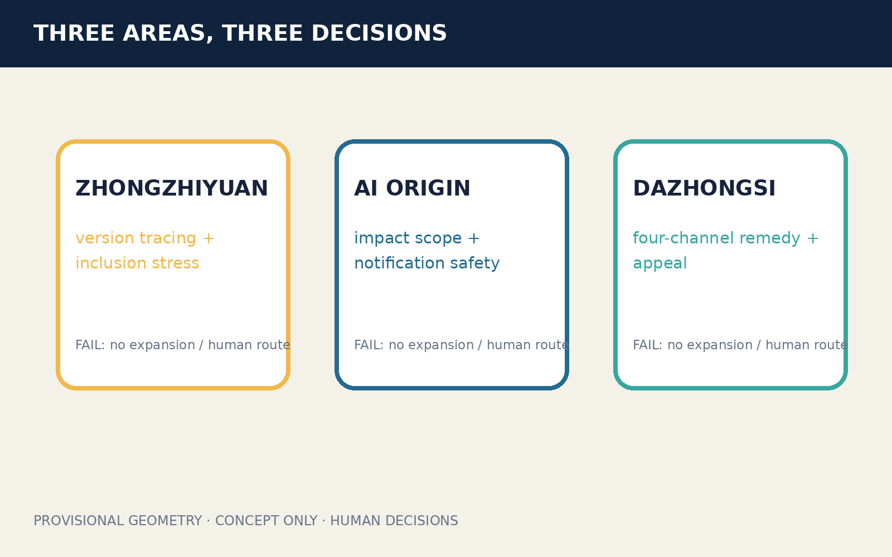
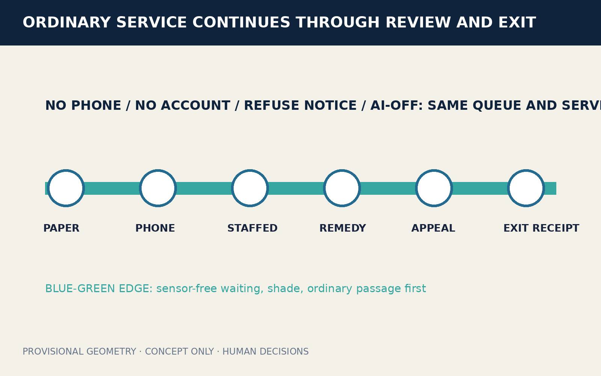
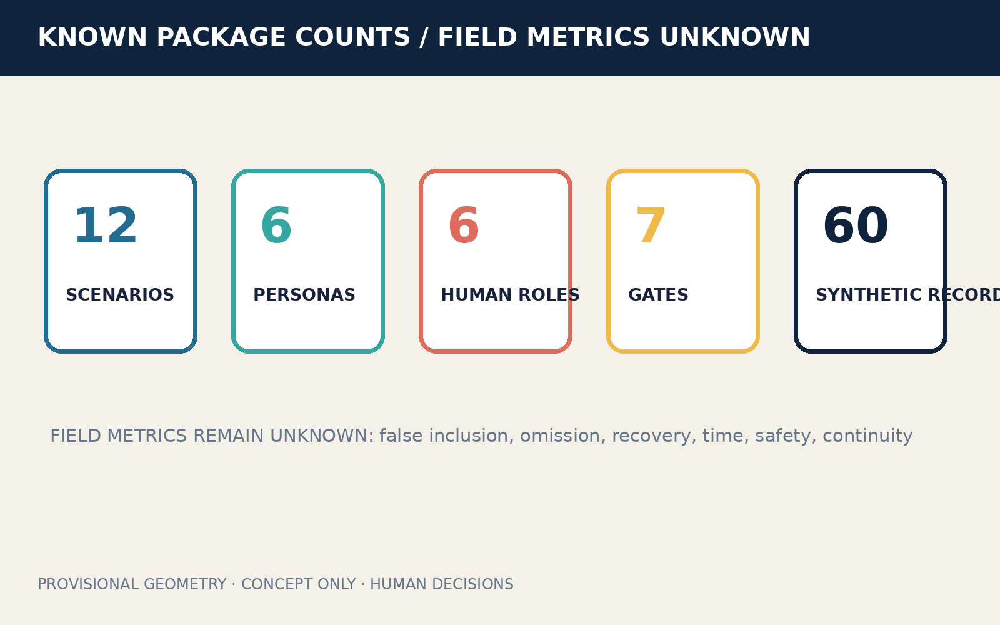

Version comparison, deduplication, omission finding, editable notices.
Status boundary: Concept only, synthetic data, provisional geometry; not an approved procedure, real-person search, or field performance.
Lifecycle and Three Scopes

Core Visual Metrics
11.41 km²provisional internal calculation
20.0%design-model value
20.9%design-model value
12 / 6 / 4scenarios / personas / tests
Seven Human-Signed Gates
REPORTPRESERVECONFIRMSCOPEREVIEWREMEDYCLOSE
Confirm error, sign inclusion/exclusion, decide remedy, handle appeal and deletion.
Disputed automation stays off; ordinary service keeps order, time, and unresolved matters.
Agent.1—Agent.6
Identity, six cases, twelve scenarios, four tests, six personas, three landmarks, culture, and annual operation are candidate-specific.

Ordinary Service and Blue-Green Continuity

Professional Layers and Deliverables
Seven-gate lifecycle and provisional scopes.
Three areas carry different human decisions.
Preservation, scope, remedy, and appeal tasks.
Paper, phone, staff, remedy, and appeal keep one queue.
Sensor-free waiting, shade, passage, and ordinary service first.
Removable indoor kits only; no demolition conclusion.
Four synthetic/co-review projects stop on any failed gate.
Twelve scenarios and four professional tests.
Three geometry values separated from unknown field metrics.
Announcement 1.3–1.5 and agent.1–agent.6 mapped separately.
Four-gate result lives in self_check.json.
Procedure, authority, notice safety, professional and site conditions pending.
Sources, Privacy, and Exit
- Public/cleared sources and synthetic records only; no real-person search.
- A candidate link is not a risk, eligibility, or identity label; notice and linkage may be refused.
- Any failed gate stops expansion while ordinary human service continues.
- Four-gate status lives in self_check.json; this page claims no approval.
